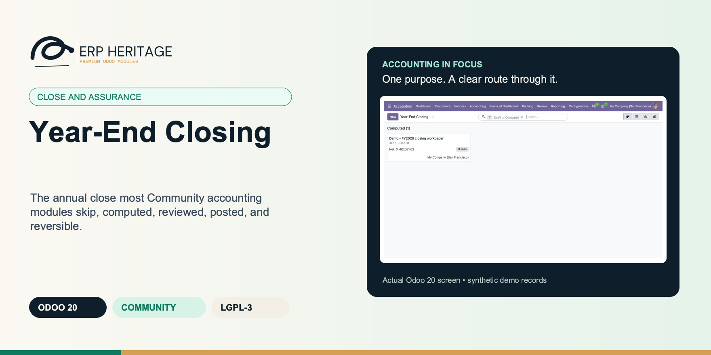
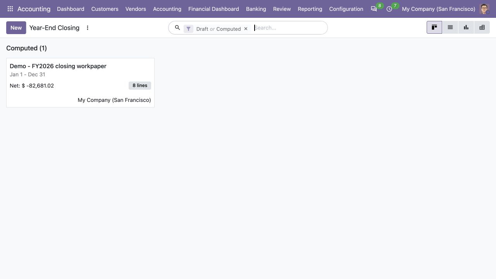
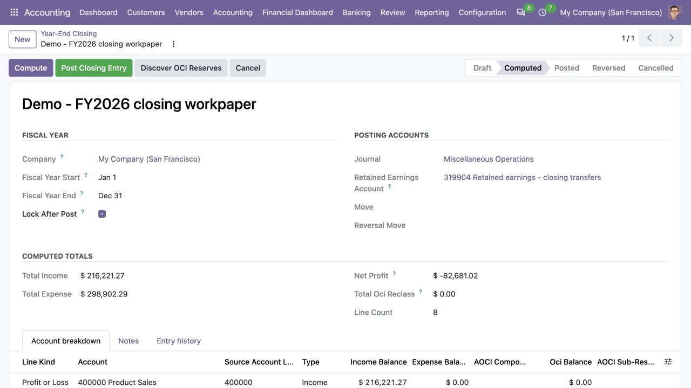
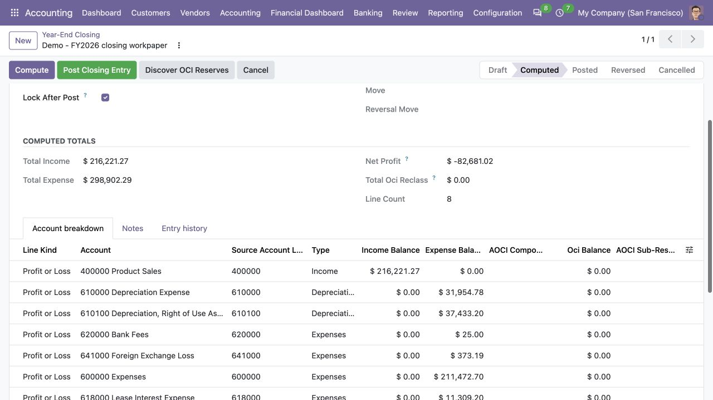

ERP HERITAGE / ODOO 20 COMMUNITY
The annual close most Community accounting modules skip, computed, reviewed, posted, and reversible.
LGPL-3 · Odoo 20 · v20.0.1.1.7 · Module guide, setup, workflows and rollout checks
The purpose
Year-End Closing computes the net result of a fiscal year from its posted journal entries, then generates one balanced closing entry that zeroes every income and expense account against a configured retained earnings account. The run is computed first, so the operator reviews the per-account profit-and-loss breakdown before anything posts. Posting and reversal are gated to the EH Accounting Manager group, and every step (computed, posted, reversed) is stamped with the user and timestamp and tracked on the mail.thread chatter.
Inside Odoo 20
Captured from Odoo 20 Community using synthetic demonstration records. Configuration screens show the available workflow; external service connectivity still requires the relevant provider setup and validation.

Computed year-end workpaper shows its net result and account-line count before closing is posted.
Captured 2026-09-22 from isolated Odoo 20 Community database with synthetic demonstration records. No external submission or live banking activity is represented.

Computed closing workpaper displays fiscal dates, retained-earnings account and income and expense totals.
Captured 2026-09-22 from isolated Odoo 20 Community database with synthetic demonstration records. No external submission or live banking activity is represented.

Account breakdown supports the computed closing totals; no closing journal has been posted.
Captured 2026-09-22 from isolated Odoo 20 Community database with synthetic demonstration records. No external submission or live banking activity is represented.
Inside this module
The run computes a per-account profit-and-loss breakdown read from posted journal entries, so the operator reviews every income and expense balance before a single line posts. Compute is idempotent: re-running unlinks and rebuilds the breakdown without duplicating.
One closing entry zeroes all income and expense accounts against retained earnings and balances by construction. Net profit credits retained earnings, net loss debits it, and a net-zero year emits no retained-earnings line yet still balances because income equals expense exactly.
Post and reverse are restricted to the EH Accounting Manager group. Computed, posted, and reversed each record the user and timestamp, tracked on chatter, with one run per company per fiscal year enforced at the database level.
A year where income exactly equals expense produces no retained-earnings line at all, and the close still balances because the income debits and expense credits cancel.
A loss is handled symmetrically to a profit: retained earnings is debited rather than credited, with exact closing-leg regressions.
Re-running compute unlinks and rebuilds the breakdown, so a second compute never duplicates lines.
Fiscal, hard and inherited parent-company locks are checked before exact-date close and reversal posting; the optional advance never rewinds.
Zero tests use the run currency's rounding, so a real 0.004 residual in a three-decimal currency is retained while immaterial residue is omitted.
From input to outcome
Confirm the year boundaries and configured closing accounts, then compute the proposed close from the intended posted ledger. Gather fiscal-year dates, income and expense balances, closing journal, retained earnings account and lock policy. Use a representative case with a known expected result so the team can separate configuration decisions from unexpected behaviour. Keep the supporting commercial or accounting evidence available during review.
Review the profit or loss and generated closing lines before the manager posts the closing entry. Follow the record’s available actions in the order intended by the workflow. Review the selected company, relevant dates and any validation messages before continuing. If the source data changes, reassess the result against the updated evidence.
The controller picks 31 December; the form derives the exact start from the company's fiscal-year configuration. Compute aggregates posted P&L and OCI in SQL across the selected accounting-branch scope, retaining every amount material at the company's currency precision. Before posting, the engine proves earlier P&L accounts are closed and checks fiscal, hard and inherited parent locks. The manager then posts one exact-date balanced entry. If an adjustment is needed, the verified inverse posts on the next day only when that exact date remains open; all close and reversal cycles stay linked.
Where corrections are needed, use the supported reversal and recomputation path and consider the applicable lock dates. Compare the outcome with the expected treatment for this case and record the reason for any difference that requires follow-up. Give exceptions an owner so they do not disappear inside a period-end spreadsheet.
Archive the run with the year-end reporting pack and communicate any lock-date change to teams that still need to post adjustments. Include the accepted operating example, configuration choices and unresolved dependencies in the handover. Review them when business policy, source data or the surrounding Odoo applications change.
Business situations
Year-End Closing is relevant to controllers responsible for fiscal-year closing entries who need to answer this question: What closing entry transfers the period result while preserving a clear reversal and review trail? Start with the process that creates the decision, identify its owner and agree what evidence the reviewer needs. A narrow pilot helps the team evaluate the supported workflow using its own accounting data before broadening access.
Use the module’s close and assurance role as one part of a controlled close. Bring the relevant fiscal-year dates, income and expense balances, closing journal, retained earnings account and lock policy to the review, then explain the result alongside the business event it represents. Establish which outputs become part of the reporting pack and which outstanding matters need a separate accounting decision.
Turn the business question into an acceptance case: What closing entry transfers the period result while preserving a clear reversal and review trail? Use one ordinary example and one relevant exception from the supported scope below. Ask the intended operator to prepare it and the reviewer to explain the result. Retain that accepted example with the deployment notes so future changes can be assessed against an understood process.
Before the first result
Confirm that the organisation needs the supported close and assurance process described here. Identify the responsible controllers responsible for fiscal-year closing entries and write down the decision they expect the module to support. Use the limitations section to separate shipped behaviour from an integration, professional judgement or operational service that needs another owner.
Prepare fiscal-year dates, income and expense balances, closing journal, retained earnings account and lock policy. Check the relevant records in the intended company and use dates that match the business event. Resolve missing accounting configuration before evaluating calculated output; plausible-looking totals do not establish that the chosen inputs or policies are correct.
This module declares Accounting Suite Base as part of its installation foundation. Its direct standard-Odoo dependencies are account, mail. Review the actual dependency set in the target database before a rollout, especially where another addon also extends the same accounting models, menus or posting actions.
Define who operates Year-End Closing, who reviews unusual results and who maintains configuration. Run the representative workflow below in a test database using the intended users. Confirm that users can reach the work they own and that the reviewer understands the available evidence before moving the process into live operation.
Workflow reference
Accumulated OCI is carried in per-component sub-reserves (IAS 1.106): a company-level mapping links each OCI component (foreign currency translation, revaluation surplus, FVOCI debt, FVOCI equity, defined benefit remeasurement, other) to its flow accounts and a dedicated AOCI sub-reserve equity account, and the closing entry reclassifies each flow account's net period movement into its sub-reserve. Retained earnings receives only the profit-and-loss result, never an OCI component. Net movement only ever moves, so amounts recycled to profit or loss during the year are never double-moved. Known OCI accounts without a complete mapping are listed on the run and block posting unless a manager overrides with a documented reason, and a discovery action seeds the mapping from the installed modules. With no mapping configured the close stays a pure profit-and-loss close.
The closing entry balances by construction across every case: net profit, net loss, and a net-zero year that produces no retained-earnings line at all. Reverse posts the symmetric inverse entry dated the day after fiscal year end. A reversed run can be recomputed and re-closed after its verified close/reversal provenance is checked; every cycle remains linked in immutable entry history. Closing and reversal entries are excluded from later close computations, so the closed year's operating result remains reproducible and a day-after reversal never becomes next-year profit. Computing is idempotent, re-running unlinks and rebuilds the breakdown without duplicating, and the lock-date advance (on by default; switching it off requires a documented reason logged in the chatter) never moves the lock backwards. Posting is refused while a later fiscal year already stands closed, so the equity roll always builds oldest-first. One run record per company per fiscal year. No silent fallbacks: a missing retained earnings account, a missing journal, and an invalid run state each surface an explicit message naming the problem.
Run dates must exactly match the company's configured fiscal-year boundaries; arbitrary partial periods cannot be labelled year end.
P&L and OCI movement are grouped in SQL, then breakdown rows are inserted in batches for full-chart performance.
Net profit is computed from posted journal entries in the fiscal year, with one reviewable breakdown row per income and expense account showing its closing balance. Income is sign-flipped to the positive debit side and expense kept on the credit side, with the totals shown before posting.
A single journal entry zeroes every income and expense account against the configured retained earnings account, with one or two retained-earnings lines signed for profit or loss. The entry balances by construction and the test suite asserts the invariant.
Reverse posts the symmetric inverse entry dated the day after fiscal year end. After verified provenance checks, the same run can be recomputed and re-closed while every closing and reversal cycle stays linked in entry history.
After posting, the run can advance the standard Odoo fiscal-year lock date so backdated entries cannot post against the closed year. The advance is idempotent and never moves the lock backwards.
Post and reverse require the EH Accounting Manager group. Computed, posted, and reversed timestamps and users are stored and tracked on the mail.thread chatter, with one run per company per fiscal year enforced by a database constraint.
Equity account carrying the accumulated balance of this OCI component. The year-end close reclassifies each source account's net period movement here. While empty the row is incomplete: its source accounts appear on the year-end run's unmapped-OCI warning list.
The OCI flow accounts the suite modules post this component's gains and losses into during the year. Their net period movement is swept into the sub-reserve account at year-end.
True when the row carries both a sub-reserve account and at least one source account, so the year-end close can reclassify it.
Run-company account code/name captured when the breakdown was computed. It is retained as stable closing-entry evidence even if account metadata changes before posting.
Profit-or-loss rows close to retained earnings. OCI rows reclassify a mapped OCI flow account's net period movement into its AOCI sub-reserve account, never into retained earnings.
Net posted movement of the OCI flow account over the fiscal year, ledger-signed (debit positive). A negative value is an accumulated credit (an OCI gain for the period); the closing entry moves exactly this net amount to the sub-reserve, so amounts recycled to P&L during the year are never moved twice.
Company whose year is closed. On Odoo 20 a run also includes that company's active accounting-branch subtree; every source branch must be enabled in the caller's company context.
Equity account that absorbs the net profit / loss for the fiscal year. Most charts call this Retained Earnings or Accumulated Profit and Loss.
When set, posting bumps res.company.fiscalyear lock date to the fiscal year end so prior period entries cannot be edited. Disabling this control requires a documented reason; the reason is logged in the chatter when the close posts without advancing the lock date.
Documented reason for posting the year-end close without advancing the fiscal-year lock date. Required when 'Lock After Post' is disabled; logged in the chatter on post.
Total income minus Total expense; positive = profit. P&L only: OCI reclassification rows never contribute, so retained earnings receives exactly this amount.
Net OCI movement of the fiscal year swept into AOCI sub-reserves by the closing entry, credit-positive (positive = net OCI gain for the year). Zero when no AOCI mapping rows are configured.
True when known OCI flow accounts moved during the fiscal year but carry no complete AOCI sub-reserve mapping. Posting is blocked unless a manager overrides with a documented reason.
Known OCI flow accounts (discovered from installed suite modules or listed on incomplete mapping rows) whose period movement would stay commingled in equity because no AOCI sub-reserve account is mapped.
Post the close even though OCI flow accounts lack an AOCI sub-reserve mapping. Requires a documented reason, logged in the chatter on post.
Documented basis for closing with unmapped OCI accounts. Required when the override is ticked; logged in the chatter on post.
Illustrative implementation exercise. The controller computes the fiscal-year close and notices that a late adjustment must be entered before the final result is accepted. Inspect the proposed income, expense and retained-earnings movement before posting. Confirm the fiscal-year boundaries and intended closing journal rather than using an attractive-looking profit total as the only review. In a suitable test period, examine the supported reversal and recomputation process. Keep the original and correcting evidence linked, and consider what the company’s lock dates permit. Compare operating P&L reporting with the closing result so engine-generated closing and reversal entries are not mistaken for new trading activity.
Questions before rollout
It is designed for controllers responsible for fiscal-year closing entries. Its central business question is: What closing entry transfers the period result while preserving a clear reversal and review trail? The listing describes the shipped operating scope and the decisions that remain with the organisation. Evaluate it against your own records and review process, rather than treating the module name as a promise to cover every scenario in that accounting area.
Have fiscal-year dates, income and expense balances, closing journal, retained earnings account and lock policy ready, together with the person who owns the related accounting policy. Confirm the year boundaries and configured closing accounts, then compute the proposed close from the intended posted ledger. A known example makes it possible to check the result and resolve configuration questions before the process is repeated across more records or companies.
Where corrections are needed, use the supported reversal and recomputation path and consider the applicable lock dates. Keep the relevant source evidence with the output and be explicit about company, date and policy choices. The most useful review asks whether the result follows from the business inputs, not only whether the operation completed without a validation message.
It belongs to the close and assurance family. Its declared custom dependency foundation is Accounting Suite Base. Installing the complete suite also brings other operating and specialist modules; using this focused module should be evaluated against its own dependency list and scope. Optional services still need their own configuration and agreement where applicable.
Disabling the optional lock advance requires a documented reason; it never bypasses a fiscal, hard or inherited lock already covering the posting date. Archive the run with the year-end reporting pack and communicate any lock-date change to teams that still need to post adjustments.
No. Year-End Closing provides the specific records, calculations or workflow described in this listing. The organisation remains responsible for its source information, accounting choices, supporting evidence and review. Where the process uses an estimate, a contract assessment or an external service, appoint the appropriate owner before relying on the output.
Scope and requirements
Disabling the optional lock advance requires a documented reason; it never bypasses a fiscal, hard or inherited lock already covering the posting date.
A reversed run may be recomputed only when its verified closing entry and exact verified reversal remain intact; lock, prior-period and chronology controls still apply.
There is no destructive reopen action. Reverse is the only way to undo a posted close, and it preserves every close/reversal cycle by linkage.
The entry is reconciled to the scoped Odoo ledger; the module does not certify an external trial-balance import.
Closing is manual and button-driven (Compute, Post, Reverse, Cancel). There is no scheduled cron.
Standards references describe the accounting subject addressed by the module. They do not establish certification, statutory filing acceptance or suitability for every jurisdiction. Your finance team owns its assumptions, accounting policies and review.
Installation scope
Odoo installs the following direct dependencies automatically. Additional dependencies can be brought in by those modules. Related modules in the wider catalogue are optional unless they appear in this dependency chain.
Shared reporting engine for the ERP Heritage Odoo 20 Community accounting suite, providing a reproducible report-execution audit log and a move-version result cache. Append-only audit log of every report render with user, timestamp, the full options snapshot, runtime, and a SHA-256 result hash for XLSX and PDF output, plus a multi-company analytic-aware parameterised SQL builder with no raw user input in SQL, a three-tier User/Manager/read-only Auditor privilege model, and a currency-aware XLSX writer. Odoo 20 Community accounting reporting engine, reproducible financial report audit trail, move-version report cache invalidation, multi-company parameterised SQL builder, append-only audit log, read-only auditor role, SHA-256 report hash compliance, currency-aware XLSX export, analytic-aware journal item aggregation.
Included dependency: eh_account_base. The shared reporting engine under the ERP Heritage accounting modules: an append-only render audit log, precise per-company cache invalidation, and a whitelist-only parameterised SQL builder.
Odoo Community dependency required by this module. Its own dependencies and configuration remain part of the installation scope.
Odoo Community dependency required by this module. Its own dependencies and configuration remain part of the installation scope.
Acceptance guide
The following are recommended rollout checks, not claims of additional built-in features. Apply the checks relevant to this module and retain evidence of your own results.
Select a recent, closed period that your finance team understands well. Keep its approved source documents, ledger totals and existing working papers available. Reproduce that period in a staging database before working on current transactions. A familiar period makes differences visible: you can distinguish an opening balance problem from a configuration choice, a timing difference or a genuine defect. Agree which person owns each discrepancy and what evidence will close it. Successful installation is the starting point; a repeatable business outcome is the acceptance criterion.
Write down the output your team needs from this module: a reviewed transaction, an exported file, a reconciled balance, an approved schedule or an operational queue. Identify who prepares it, who reviews it and who relies on it next. Make the scope concrete with one company, one reporting period and a small representative document set. Include an ordinary case and an exception. This keeps the evaluation focused on the business decision instead of the number of available screens, and gives reviewers a consistent way to compare the new workflow with their current process.
Use the Odoo 20 edition of the module and its dependencies together. The manifest defines what Odoo installs automatically; a feature mentioned elsewhere in the wider product family is not automatically included. Review the dependency guide on this page before enabling the complete suite, especially where your deployment also uses Sales, Purchase, Inventory or website components. Confirm that your hosting arrangement accepts custom server modules and their Python requirements. Keep a copy of the installed module versions with your acceptance record so a later update can be checked against the same baseline.
Check the companies, currencies, fiscal periods, journals, accounts and partner records used by your sample. Confirm that account purposes agree with your chart of accounts and that archived records are not being selected inadvertently. Review company-specific settings while the intended company is active. Where a workflow needs bank details, analytic dimensions, product information or payment terms, validate those inputs with their owner. Clean master data reduces repeated exceptions and makes it easier to investigate the exceptions that remain. Keep the preparation list short enough for someone else to repeat it.
Decide which source establishes the opening position before introducing new transactions. Save the source date, company, currency and supporting reconciliation. If a module maintains a schedule or a working-paper balance alongside the ledger, document how that opening amount should tie to the general ledger. Do not use balancing entries to hide a difference during the pilot. Classify the difference, correct its source and rerun the comparison. The resulting trail is useful both for your internal reviewer and for support if an unexpected calculation needs investigation.
Choose named users for preparation, review and administration. Confirm their practical access by signing in as those users in staging, rather than relying on an administrator's view of the menus. A visible menu does not replace model access or record restrictions, and a hidden menu does not by itself prove that data is protected. For your own acceptance check, verify the specific business operations each role needs. If your organization requires separation of duties, include that policy in the rollout criteria and check the actual workflow against it before granting production access.
Run the sample with the intended company selected, then repeat the relevant navigation and search checks as a user assigned to a different company. Record which company owns each source document and each generated result. For users who work across entities, confirm how their allowed-company selection affects totals and available records. Investigate any cross-company difference before it becomes a month-end problem. Group-level work and company-level work have different scopes; use the appropriate module and document the scope on the review evidence instead of assuming one screen represents both.
Include a company-currency case and, where relevant to the module, a foreign-currency case. Check the date used to select exchange rates and keep the rate source available to the reviewer. Add a transaction near a period boundary so the team can see whether document date, accounting date or another business date drives the result. Test decimal precision with a small amount as well as a large one. Record the expected rounding treatment. These checks turn vague differences in totals into questions that can be resolved against your accounting policy.
Choose one result and follow the available links or record references back to the original business document. Compare its company, partner, amount, currency and dates with the expected source. Where the workflow creates a journal entry, inspect the accounts and balancing lines before relying on an aggregate report. Where it exports a file, compare the file's records with the selected batch. Save a small, intelligible evidence set instead of an indiscriminate screenshot archive. A reviewer should be able to explain what happened without needing the original preparer beside them.
If this module creates or updates accounting entries, separate preparation from the decision to post in your operating procedure. Inspect the proposed outcome, resolve missing configuration and confirm the intended period before using a posting action. If the module does not post entries, identify the equivalent commitment point, such as sending a file or approving a review record. Record who is allowed to make that decision. The page describes the module's supported workflow; your team still needs an operating policy that fits its accounting responsibilities and approval structure.
From pilot to production
Use a deliberately incomplete sample in staging: a missing required setting, an unsuitable date or a source document that is not ready for the next step. Observe the actual message and the record state that remains. Correct the input and repeat the operation. Check that the recovered result agrees with the ordinary successful case. For transactions already committed, use the supported correction or reversal workflow rather than editing database records. Your acceptance record should explain how staff recover from mistakes, because that is part of day-to-day usability, not an unusual administrative task.
Repeat an import, calculation, preparation step or button action only where the documented workflow permits it. Confirm whether the expected behavior is a recalculation, a refusal, a new version or reuse of an existing record. Do not infer universal duplicate prevention from one successful test. Record the behavior of the actual operation your team will use and include it in staff guidance. A small, identifiable sample makes duplicate records easy to spot and avoids creating a misleading acceptance result from a large batch with poorly understood contents.
Where accounting dates are involved, inspect your company's lock settings and the role that can change them. Include one sample dated inside a closed period and one in the open period, then observe the supported behavior with normal finance access. Agree how the team will handle late documents and approved corrections. The goal is a clear route for legitimate work that preserves the reason the period was closed. Record the policy alongside the module's workflow so operators know when to stop and involve the person responsible for the close.
If the module produces reports or exchange files, have the intended recipient inspect a sample. For a finance report, check the filters, company, dates, currency, labels and totals. For a bank or service file, use that recipient's own validation or test process before a production submission. Generating a structurally valid file does not establish acceptance by every provider. Keep the exact sample and any recipient feedback with the rollout record. Where no export is provided, agree which supported screen or linked record serves as the handover evidence.
Identify any step that depends on a separately configured provider, connector, credential or commercial service. Confirm the exact adapter and its requirements before scheduling a live demonstration. Some family modules provide deterministic rules or file preparation without a live external connection; their usefulness should be evaluated on that basis. Test a provider failure in staging only when the adapter offers a safe test route. Make it clear who manages credentials and provider subscriptions, and who should be contacted when an external service is unavailable.
Time the operations your staff will actually repeat, using a dataset that resembles your expected company, date range and document volume. Record the environment and sample size beside the timings. Include navigation, filtering, preparation and review rather than quoting a single best-case page load. This page makes no universal performance promise: network latency, database size, customizations and infrastructure affect results. Use measurements to choose a practical rollout batch size and to identify any operation that needs investigation before more users join the workflow.
Give staff a short exercise that begins with a business situation and ends with a reviewed result. Include the expected amount or state, the navigation route, the point at which a reviewer becomes involved and the supported correction route. Let operators explain why their result is correct. Add only the settings and exceptions relevant to their role. A concise internal playbook built from your own pilot is easier to maintain than a large collection of unannotated screenshots, and it helps new users understand the relationship between this module and the rest of Accounting.
Capture the module version, Odoo version, affected company, operation, exact message and a minimal sequence of steps. Use redacted sample documents when sharing evidence outside your organization. State the expected result and the actual result separately. Include the date filters and role used, because the same record can look different with another scope or set of permissions. Never include passwords, API tokens or private keys in a support message. Good reproduction details allow the problem to be investigated without guessing at your business setup or asking staff to repeat a full close.
Before deploying an update, back up the database and filestore together, and restore that backup into an isolated environment. Apply the module update there, then repeat the key pilot scenarios using the saved acceptance record. Check that existing documents remain readable and that the expected actions and menus still lead to the right workflow. Include one newly created record as well as an older one. Keep a rollback plan appropriate to your deployment and confirm that the backup can be restored before scheduling the production change.
Agree the release criteria before the pilot ends: expected financial results, access boundaries, supported corrections, output acceptance and owner sign-off. List unresolved items with their business impact instead of treating every observation as a blocker or dismissing it as cosmetic. Start production with a manageable scope and a named reviewer. Keep the first cycle's evidence so that later enhancements can be assessed against a concrete baseline. App-store descriptions help you select and understand the module; acceptance in your own configuration establishes whether the workflow is ready for your team.
Connected capabilities
These related modules explain how this workflow connects to the wider accounting process. Only the dependencies declared above are installed automatically. Choose optional additions for a specific business need.
Audit Pack and Integrity hardens the period close so an auditor can trust the ledger. It switches Odoo's inalterable hash chain (restrict mode) on the company's sale, purchase, general, bank and cash journals, then scans the period for four integrity controls: no draft entries, every posted entry balanced to zero, every posted entry on a hash-restricted journal carrying its hash, and no open bank or cash suspense. A period is signed off only after it has ended and only by an EH Accounting Manager who is not the preparer. Sign-off advances both the fiscal-year lock and, where supported, the irreversible hard lock so no exception can reopen the vouched period. The gate is recomputed live at sign-off and the hash chain is re-verified through core, so a stale or tampered check row cannot vouch a period that no longer passes.
The shared engine that powers the ERP Heritage accounting modules for Odoo 20 Community. It auto-installs as a dependency of any ERP Heritage accounting module, so you do not need to install it by hand.
Period Close Workflow turns the repeatable month-end close that most teams run from a spreadsheet into a tracked process inside Odoo. Build a reusable checklist once, instantiate it for a period, work the tasks, request approval, and close, with a defensible audit trail at the end.
Translate open monetary foreign currency balances at the period end closing rate and post the unrealised gain or loss to P and L, per IAS 21 for the common case where the company keeps its functional currency in the ledger and transacts partly in foreign currencies.
ERP Heritage Community Accounting Pro installs a fixed collection of 50 direct accounting dependencies. Together with the suite itself and the transitive EH EDI Core foundation, its custom-module closure contains 52 modules. The collection brings reporting, reconciliation, payments, receivables, approvals, specialist accounting, group work and close controls into one Community installation. Its value comes from connecting those processes and their evidence; adoption still requires deliberate company configuration, accounting ownership and review. Australian BAS is available separately and installs the suite as its accounting foundation.
Plan the surrounding workflow
The following playbooks explain adjacent work in named companion modules. They are included here to help you plan the handoff around this module. Each companion is labelled as an installed dependency or an optional addition. These capabilities belong to that named companion, not to the standalone module you are reading about.
Optional companion; requires separate installation
The spreadsheet month-end close, moved into Odoo with a real sign-off chain and a segregation-of-duties gate.
The preparer cannot request review. The reviewer cannot approve. A third, different Accounting Manager performs final sign-off. These are named server-side refusals, not a policy note in a manual.
A run copies the template into independent per-run task instances. Editing this period never mutates the template and never reaches back into a prior closed run. The append-only sign-off history survives every reopen cycle.
LGPL-3 source on disk. No activation key, no phone-home, no recurring licence. Tasks and sign-offs are queryable, exportable records with server-owned audit anchors. Free today, free at renewal, because there is no renewal.
Clicking Mark Done on an already-done or not-applicable task is a no-op that preserves the original signer and timestamp. The audit trail cannot be quietly overwritten by a second click, and a regression test guards the prior bug where the check compared against a non-existent state.
Optional tasks (Is required false) never block the request-approval transition, so a close can proceed with optional items still pending. Only required tasks gate the close, which is verified by test.
Creating a run from a checklist with zero task templates raises an error instead of producing an empty, meaningless run.
Only an Accounting Manager can revert a completed task to pending. The reset clears the completion fields and any blocked reason, a controlled rework path that ordinary users cannot trigger and that is itself recorded in chatter.
Setting the period end auto-fills the period start to the first of that month only when the start is empty or out of range, so a deliberately custom range is left intact.
Review this companion’s own setup and scope before connecting the workflows. Keep the company, reporting date and business document references consistent at the handoff.
Optional companion; requires separate installation
Retranslate open foreign currency balances at the closing rate into one balanced, audited IAS 21 journal, with optional auto reversal on a finance-controlled open date.
Open monetary balances are retranslated at the closing rate and the unrealised gain or loss is posted to one balanced journal. Non monetary accounts (inventory, fixed assets, equity) are rejected even if a user flags them, because IAS 21 carries them at historical rate.
Every adjustment is a queryable, exportable line carrying its closing rate snapshot, old and new balance, and partner. Each run stamps user and timestamp on every transition with full chatter, post and reverse are manager only, and a posted run cannot be re posted.
The ECB, Frankfurter and supported dated national feeds honour historical dates and weekend rules; latest-only sources identify the fixing date they actually returned. A configured fallback fills currencies the primary source omits. A missing closing rate still raises and names the currency instead of guessing.
Gain and loss classification respects the signed balance, so a positive adjustment on a credit balance liability is treated correctly versus the same adjustment on an asset. This sign inversion is the subtlety most spreadsheet workflows get wrong.
Open balance detection uses the foreign currency residual, so a line reconciled at a date after the revaluation date is still included while a fully settled line is skipped. Revaluation reflects what was actually open on the date.
The functional currency translation legs carry no amount in foreign currency, so the foreign currency residual stays on the original journal items and the same exposure is never revalued twice.
Within a run each currency is fetched from the rate source only once and cached, even across many account and partner groups, and only currencies present in open lines are requested from the provider.
The feed falls back from the daily to the 90 day historical XML for non business days and back dated runs and derives non EUR pairs by cross rate, then raises an explicit error rather than returning empty silently.
Review this companion’s own setup and scope before connecting the workflows. Keep the company, reporting date and business document references consistent at the handoff.
Optional companion; requires separate installation
Turn on the inalterable hash chain, scan the period for integrity, and lock it under a segregated manager sign-off so a reviewer can rely on the ledger.
Sign-off does not just check that a move carries some hash; it re-derives the inalterable chain through core's per-prefix integrity check and blocks if any link fails to recompute. A move whose stored hash or a hashed field was edited underneath a stale hash is caught, not waved through.
The user who runs the checks is stamped as preparer of record on the first run and is never overwritten. Sign-off is refused if that same user attempts it, and both the preparer and signer identities are anchored so a direct RPC write cannot reassign or clear them.
Checks are rescanned against the live ledger at the moment of sign-off, so a period that has since gained a draft, unbalanced, or unhashed entry cannot be signed off on a stale stored result. An unmet blocking check, a self-sign-off, or an already-signed period each raise an explicit message.
Check rows are the sign-off gate, so they are system-written only: direct create, write, or delete is refused even for a manager, and the rows are rescanned live at sign-off so an edited stored row cannot vouch a failing period.
The hashed check does not stop at hash presence; it re-derives the chain through core and treats a recompute that errors as a blocking failure, so a tampered hash or hashed field cannot pass.
The prepared-at and signed-at timestamps cannot be written on their own, and the identity anchors accept only the acting user, so a sign-off time cannot be backdated or reassigned by RPC.
Optional period-close and year-end gates use validated record pickers resolved through registry-guarded references, so the pack installs and signs off on its own when those workflow modules are absent.
The integrity check delegates to core, which partitions the chain per sequence prefix, so a hashed journal spanning fiscal years is verified correctly instead of being mis-flagged as broken.
Review this companion’s own setup and scope before connecting the workflows. Keep the company, reporting date and business document references consistent at the handoff.
Optional companion; requires separate installation
Prepare a statement of changes in equity and a statement of comprehensive income that reconcile, component by component, to your posted general ledger and lock once signed off.
Derive opening equity, per-component opening balances and profit for the period straight from posted journal items, then read the closing tie-out that shows whether the worksheet actually agrees with the general ledger at period end.
The equity statement rolls each component from opening to closing across profit, OCI, dividends, share issues and other movements; the comprehensive income statement groups OCI by whether it may be reclassified to profit or loss and attributes total comprehensive income to owners and non-controlling interests.
Once an EH Accounting Manager confirms a statement its figures and lines are frozen, so a raw write, a new line or a deletion cannot silently move the totals. Reopening to edit is a manager-gated action that unlocks the figures again.
Ledger derivation returns zero both for a genuine nil balance and for the total absence of postings, so the module separately probes whether any posted equity or P and L item exists and marks the tie-out advisory only when no figure is really derivable, instead of fake-tying to zero.
When components are mapped to ledger accounts, opening equity on accounts no line claims (for example current-year earnings not yet allocated) is assigned to the retained-earnings fallback line so the worksheet total opening still equals the ledger figure.
Confirmation blocks on a failed tie-out only where a real ledger figure exists: profit must tie and, if any owners or NCI amount is entered, attribution must reconcile; on an empty-ledger company these stay advisory chatter warnings, never a hard stop.
Adding a line to a confirmed statement would recompute and move the parent totals, so create on child lines is blocked when the parent is confirmed, closing the gap that a write-only freeze would leave open.
The cross-statement tie-out marks a pair not applicable when no source statement exists for the period, recording in a source note exactly which statements were found so a missing optional statement never blocks and never silently passes as a real tie.
Review this companion’s own setup and scope before connecting the workflows. Keep the company, reporting date and business document references consistent at the handoff.
ERP Heritage
Start with the workflow, setup and acceptance guide above. For implementation or support, share your Odoo version, module version, business scenario and a redacted example. Keep credentials and personal data out of support messages.
Published by ERP Heritage. Odoo is a trademark of Odoo S.A.; this independently developed application is not an Odoo S.A. product or endorsement.
Package: eh_account_year_end · Release: v20.0.1.1.7 · License: LGPL-3.